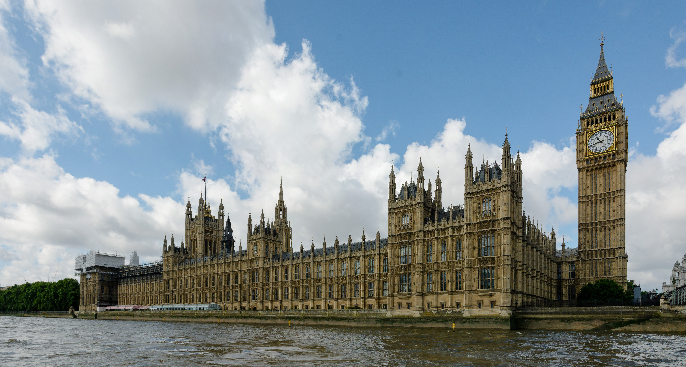
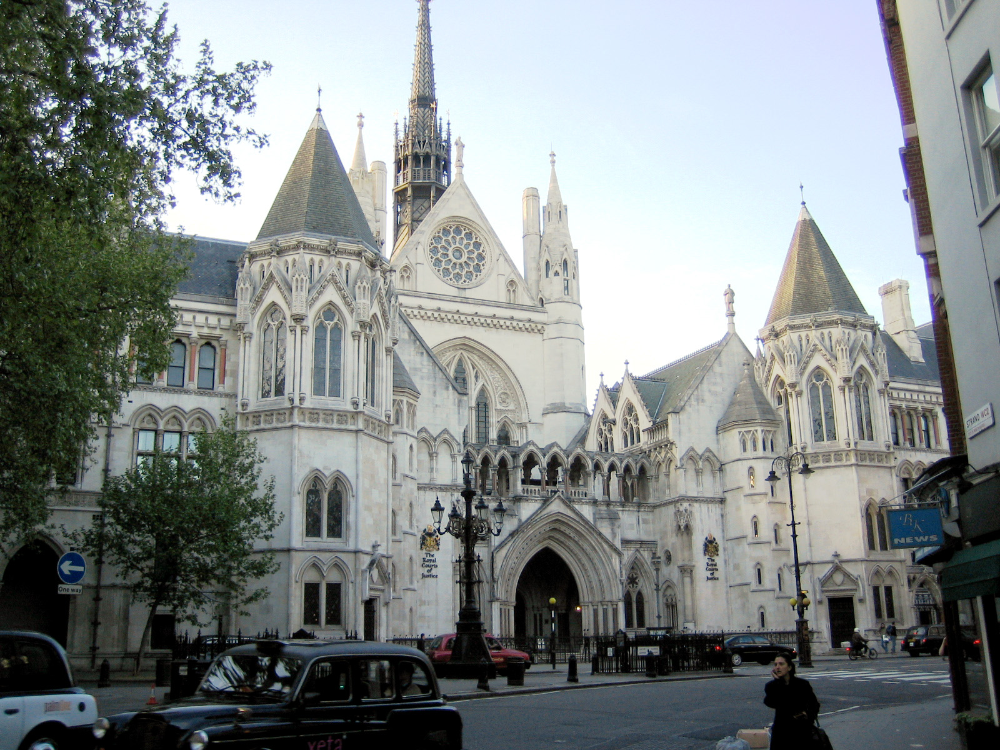

England is a country that is part of the United Kingdom.[6][7][8] It shares land borders with Scotland to the north and Wales to the west. The Irish Sea lies northwest of England and the Celtic Sea lies to the southwest. England is separated from continental Europe by the North Sea to the east and the English Channel to the south. The country covers five-eighths of the island of Great Britain, which lies in the North Atlantic, and includes over 100 smaller islands, such as the Isles of Scilly and the Isle of Wight.
House of ParliamentThe area now called England was first inhabited by modern humans during the Upper Palaeolithic period, but takes its name from the Angles, a Germanic tribe deriving its name from the Anglia peninsula, who settled during the 5th and 6th centuries. England became a unified state in the 10th century, and since the Age of Discovery, which began during the 15th century, has had a significant cultural and legal impact on the wider world.[9] The English language, the Anglican Church, and English law – the basis for the common law legal systems of many other countries around the world – developed in England, and the country's parliamentary system of government has been widely adopted by other nations.[10] The Industrial Revolution began in 18th-century England, transforming its society into the world's first industrialised nation.[11]
Royal Courts of Justice.England's terrain is chiefly low hills and plains, especially in central and southern England. However, there is upland and mountainous terrain in the north (for example, the Lake District and Pennines) and in the west (for example, Dartmoor and the Shropshire Hills). The capital is London, which has the largest metropolitan area in both the United Kingdom and the European Union.[nb 1] England's population of over 55 million comprises 84% of the population of the United Kingdom,[3] largely concentrated around London, the South East, and conurbations in the Midlands, the North West, the North East, and Yorkshire, which each developed as major industrial regions during the 19th century.[12] The Kingdom of England – which after 1535 included Wales – ceased being a separate sovereign state on 1 May 1707, when the Acts of Union put into effect the terms agreed in the Treaty of Union the previous year, resulting in a political union with the Kingdom of Scotland to create the Kingdom of Great Britain.[13][14] In 1801, Great Britain was united with the Kingdom of Ireland (through another Act of Union) to become the United Kingdom of Great Britain and Ireland. In 1922 the Irish Free State seceded from the United Kingdom, leading to the latter being renamed the United Kingdom of Great Britain and Northern Ireland.
England" is derived from the Old English name Englaland, which means "land of the Angles".[15] The Angles were one of the Germanic tribes that settled in Great Britain during the Early Middle Ages. The Angles came from the Anglia peninsula in the Bay of Kiel area (present-day German state of Schleswig–Holstein) of the Baltic Sea.[16] The earliest recorded use of the term, as "Engla londe", is in the late-ninth-century translation into Old English of Bede's Ecclesiastical History of the English People. The term was then used in a different sense to the modern one, meaning "the land inhabited by the English", and it included English people in what is now south-east Scotland but was then part of the English kingdom of Northumbria. The Anglo-Saxon Chronicle recorded that the Domesday Book of 1086 covered the whole of England, meaning the English kingdom, but a few years later the Chronicle stated that King Malcolm III went "out of Scotlande into Lothian in Englaland", thus using it in the more ancient sense.[17] According to the Oxford English Dictionary, its modern spelling was first used in 1538.[18] The earliest attested reference to the Angles occurs in the 1st-century work by Tacitus, Germania, in which the Latin word Anglii is used.[19] The etymology of the tribal name itself is disputed by scholars; it has been suggested that it derives from the shape of the Angeln peninsula, an angular shape.[20] How and why a term derived from the name of a tribe that was less significant than others, such as the Saxons, came to be used for the entire country and its people is not known, but it seems this is related to the custom of calling the Germanic people in Britain Angli Saxones or English Saxons to distinguish them from continental Saxons (Eald-Seaxe) of Old Saxony between Weser and Eider rivers in Northern Germany.[21] In Scottish Gaelic, another language which developed on the island of Great Britain, the Saxon tribe gave their name to the word for England (Sasunn);[22] similarly, the Welsh name for the English language is "Saesneg". An alternative name for England is Albion. The name Albion originally referred to the entire island of Great Britain. The nominally earliest record of the name appears in the Aristotelian Corpus, specifically the 4th-century BC De Mundo:[23] "Beyond the Pillars of Hercules is the ocean that flows round the earth. In it are two very large islands called Britannia; these are Albion and Ierne".[23][24] But modern scholarly consensus ascribes De Mundo not to Aristotle but to Pseudo-Aristotle, i.e. it was written later in the Graeco-Roman period or afterwards. The word Albion (Ἀλβίων) or insula Albionum has two possible origins. It either derives from a cognate of the Latin albus meaning white, a reference to the white cliffs of Dover (the only part of Britain visible from the European mainland)[25] or from the phrase the "island of the Albiones"[26] in the now lost Massaliote Periplus, that is attested through Avienus' Ora Maritima[27] to which the former presumably served as a source. Albion is now applied to England in a more poetic capacity.[28] Another romantic name for England is Loegria, related to the Welsh word for England, Lloegr, and made popular by its use in Arthurian legend.